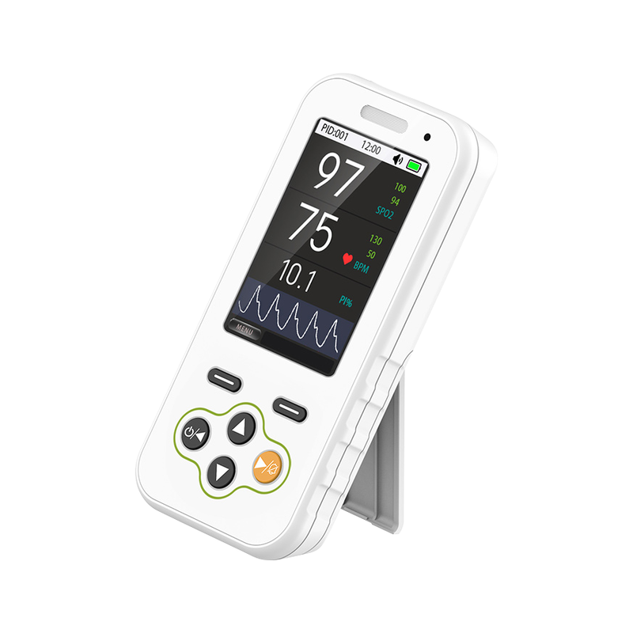

User Manual
Request the English manual for the model and configuration you are evaluating.
Request manual →The YH02 is a handheld pulse oximeter with a 3.5-inch TFT display, four AA batteries and optional external sensors. Review the sensor selection and operating requirements for your project.
Manufacturer: YimiLife · Quality management

Compare the listed parameters with your project requirements. Confirm the selected configuration and applicable documentation before planning samples.
| Specification | Details |
|---|---|
| SpO₂ | Range: 35–100% Accuracy: ±2% (70–100%) Accuracy unspecified below 70% Resolution: 1% |
| Pulse rate | Range: 30–250 bpm Accuracy: ±3 bpm Resolution: 1 bpm |
| Display | 3.5-inch TFT |
| Power & battery life | 4 × AA 1.5 V batteries Approx. 15 hours* Low-battery indication |
| Dimensions & weight | 70 × 150 × 30 mm (W × H × D) <500 g (fully configured, including batteries) |
| Optional sensors | RS201: reusable adult finger sleeve RS202: reusable adult finger clip SS201: disposable adult/pediatric nasal alar clip |
| Operating mode | Continuous operation |
| Ingress protection | IPX2 |
*Battery life under typical configuration: fresh batteries, 25°C ambient temperature, continuous SpO₂ measurement, minimum backlight brightness and sound off.
Choose the sensor configuration before finalizing the product brief. The listed options include reusable adult finger sensors and a disposable adult/pediatric nasal alar sensor.
Request files for YH02, your selected configuration and target market. Document availability and regulatory scope must be confirmed for your project.
Request the English manual for the model and configuration you are evaluating.
Request manual →Ask which CE, FDA or NMPA documents apply to your model and target market.
Request documents →Review the product range and discuss other models for your sourcing project.
View catalog options →YH02 uses a 3.5-inch TFT display; YH01 uses a 3.5-inch LED display. Their stated battery-life figures also differ, so compare the specifications and the stated test conditions.
RS201 is a reusable adult finger sleeve, RS202 a reusable adult finger clip, and SS201 a disposable adult/pediatric nasal alar clip. Confirm the selected sensor and the corresponding documentation for your project.
The approximate 15-hour figure applies to fresh batteries, 25°C ambient temperature, continuous SpO₂ measurement, minimum backlight brightness and sound off.
Share your target market, preferred configuration and expected quantity.